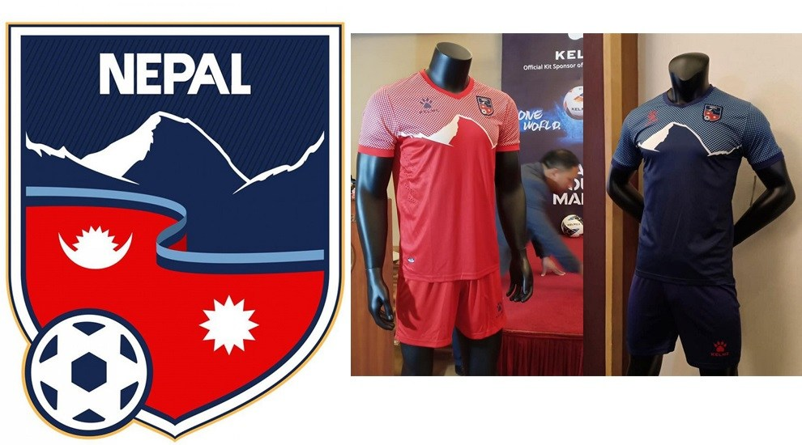
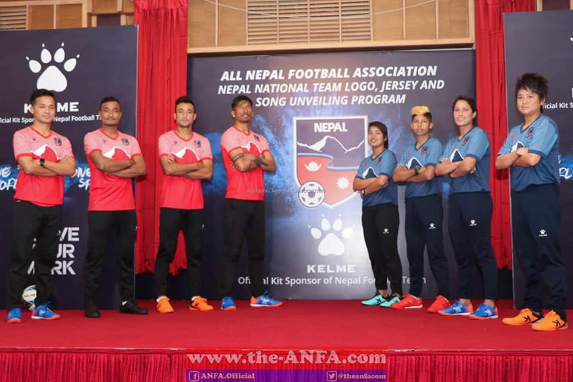
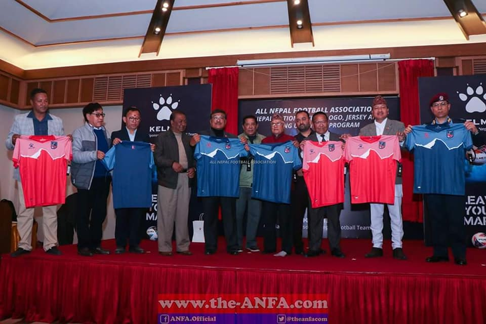

ALL NEPAL FOOTBALL ASSOCIATION

代表チームのキットは、ネパールの国旗の色を反映するために、赤、青、白の三色を採用しています。赤はホームマッチに使用され、青は離れて使用されます。一部のキットのパターンは、フラグの三角形の形状、つまり2013キットを反映しています。ネパールのキットは、チーム固有のカスタムキットとは対照的に、ほとんどがテンプレートキットです。これは、ネパールの代表チームがメーカーとのキットパートナーシップ取引を行う余裕がないためです。 1998年以前の歴史についてはほとんど知られていません。しかし、1998年のバンコクでのアジア大会では、ネパール代表チームはBijay Shahを雇い、チームに技術的な支援を提供すると同時に、アシスタントコーチを務めました。当時、チームはトーナメント用のスポーツウェアを印刷していませんでした。その場しのぎのキットを印刷した後、BijayはAttshとして知られるTシャツ印刷会社を設立することに触発されました。アメリカの印刷会社および韓国の同僚とのパートナーシップを通じて、彼らは1999南アジア大会に出ています。
  